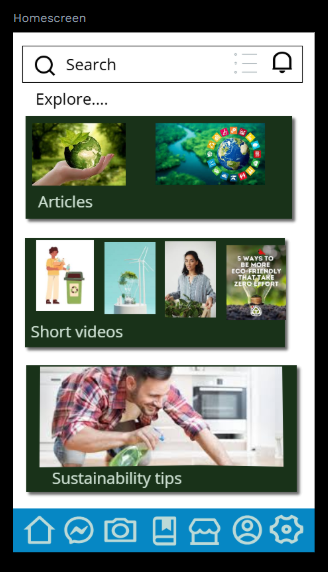
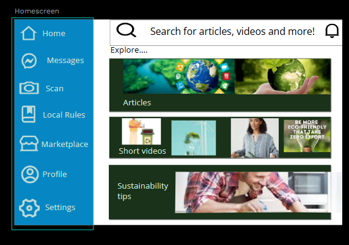

In ITUX5.210 UX and UI Fundamentals, I designed NewLife, a mobile and web app that helps people recycle correctly and swap or give away unwanted items. I followed the full UX process: researching comparable apps and users, defining requirements through hierarchical task analysis, producing wireframes, evaluating a peer's design, and building a connected multi-platform prototype. I applied feedback at every stage, and learned to ground design decisions in UX principles, adapt interfaces to different devices, and balance ambition with scope.
The three learning outcomes were: 1. Define principles for interaction, user experience, and interaction design 2. Describe the relationship of human computer interaction to user experience in user interface design. 3. Develop a prototype applying suitable interaction design approaches and techniques, and analyse its usability and user experience.
In this course I learned how to take a design problem from research through to a tested prototype. I analysed existing apps like Scrapp and RecycleMe NZ against UX/UI principles, identified and prioritised user groups, and used hierarchical task analysis to turn two key goals into clear functional and non-functional requirements. I learned to design for multiple media by producing workflows and wireframes for both mobile and desktop, adapting each to its context, and to choose typography, colour, and style that supported principles like consistency, readability, and reduced cognitive load. Evaluating a classmate's app with a cognitive walkthrough taught me how to give useful, severity-rated feedback, and receiving feedback on my own work showed me the value of iterating and justifying which changes to make and which to defer. Finally, I learned how to plan a formal usability test, and I recognised areas to improve, such as tighter scoping, testing with more participants, and checking accessibility measures like colour contrast.
Researched two existing apps and three user groups, and wrote the NewLife concept statement. Produced HTA diagrams and 10 requirements per goal. Created workflows and paper and digital wireframes for both goals on mobile and web. Completed a peer cognitive walkthrough. Recommended a consistent menu and filter across platforms, and an emergency exit/cancel button on key screens.
Updated my concept designs with both recommendations, and flagged the cluttered web results screens for rework. Built a connected prototype covering both goals on mobile and desktop, with about 14 mobile screens and matching desktop versions, plus interaction flow videos. Applied my design criteria consistently, with written justification. Conducted a formal usability evaluation with a test plan and supporting documents. Made evaluation-based recommendations (add colour for engagement, add save/delete listing buttons), and justified deferring notifications and ratings. Delivered a final coloured prototype and a conclusion with future directions (ratings, notifications, expanded recycling databases).


Strengths: I followed the whole UX process end to end, tied decisions to named UX principles, kept designs consistent across platforms, and acted on feedback. Growth areas: Scope: My feature list (marketplace, scanner, videos, articles, map) was ambitious. Tighter scoping is something I'd prioritise next time. Evaluation depth: My test plan covered one participant. Next time I'd test more users and record measurable results such as time on task and error counts. Accessibility: Accessibility was a stated requirement, but I didn't check colour contrast ratios (e.g., WCAG) on the final screens. That's a clear next step.
The overall course grade I recieved for this course was a 94% which is an A+